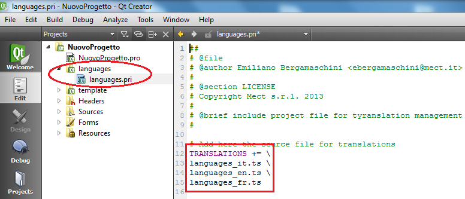
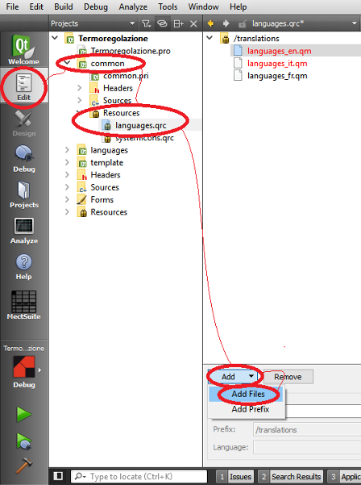

Per aggiungere un nuovo file di lingua bisogna:
Andare nell’albero di progetto sotto la sezione languages.

Aprire il file “languages.pri” e aggiungere il nome del file di traduzione della lingua desiderata ricordando che il file dovrà chiamarsi languages_*.ts dove al posto di * dovrà essere messo il codice della lingua desiderata (es: fr → francese). I codici da utilizzare sono visibili in questa pagina web: wiki.freepascal.org/Language_Codes
ATTENZIONE: tra il nome di un file e l’altro occorre inserire il simbolo “ \ ”.
Compilare in modo da creare il file di traduzione su file system (creazione dei file: *.qm e *.ts).
Andare nell’albero di progetto sotto la sezione “common” → “Resources”.
Aggiungere nel file di risorse “languages.qrc” il relativo file *.qm creato dalla compilazione del passo precedente.
Salvare tutto: File → Save “resources.qrc”.
